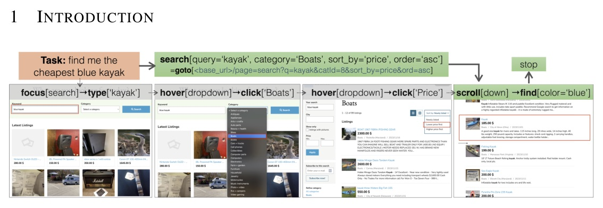
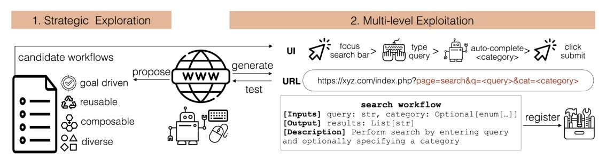
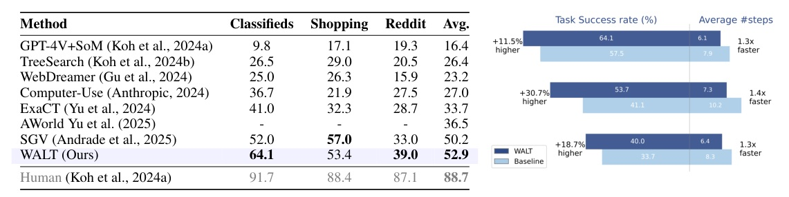
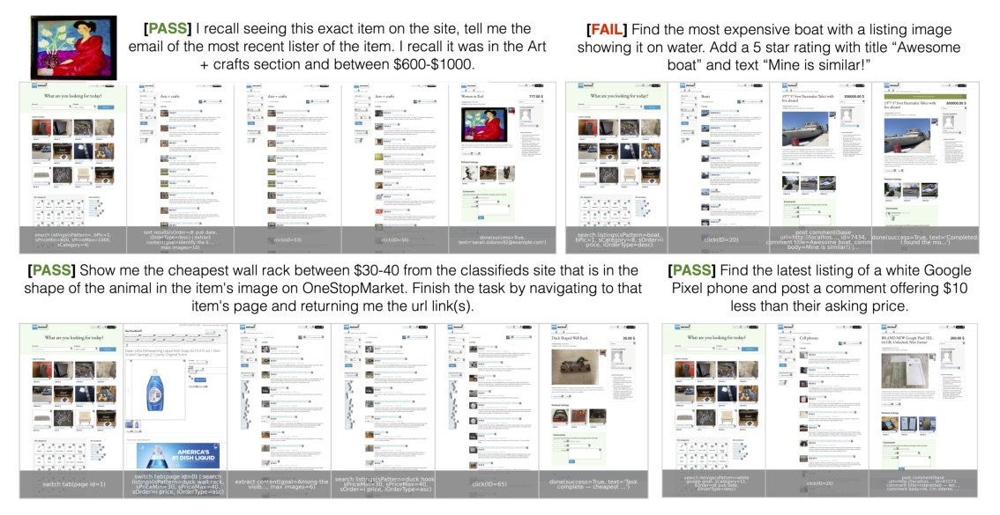

把網站已經設計好的功能，轉成可驗證的高階工具；瀏覽器 agent 不必每次都從 click / type 開始推理。
Accepted-paper fallback · arXiv submitted 2025-10-01 · source deck 2026-10-24
不要讓 agent 「學會點擊」；讓它呼叫網站本來就具備的功能。
傳統 browser agent
WALT tool


可靠性與效率
可控的 LLM 依賴
Bbrowser
Btool
Agentic reasoning 是例外路徑，不是 executor 的預設。
短 action script 通常是 URL promotion；較長的 content-management script 多為 deterministic UI interaction。Classifieds 分析中，9 個工具僅 3 個包含 agentic step。
VisualWebArena
WebArena

| Method | GitLab | Map | Shopping | CMS | Multi | Avg. | |
|---|---|---|---|---|---|---|---|
| SkillWeaver | 22.2 | 33.9 | 27.2 | 25.8 | 50.0 | - | 29.8 |
| AWM | 28.9 | 39.4 | 34.8 | 39.0 | 51.9 | 18.8 | 35.5 |
| ASI | 32.2 | 43.1 | 40.1 | 44.0 | 54.7 | 20.8 | 40.4 |
| Hybrid Agent | 44.4 | 45.9 | 25.7 | 41.2 | 51.9 | 16.7 | 38.9 |
| WALT (Ours) | 57.0 | 58.7 | 41.2 | 56.2 | 48.5 | 20.8 | 50.1 |
| GPT-5-mini variant | Tools | DOM | Verify | Steps ↓ | SR ↑ |
|---|---|---|---|---|---|
| baseline | none | text | self | 8.9 | 57.5 |
| tool only | discovered | text | self | 6.5 | 61.5 |
| DOM parser | none | multimodal | self | 7.5 | 59.0 |
| external verifier | none | text | external | 11.0 | 59.4 |
| full WALT | discovered | multimodal | external | 7.0 | 64.1 |
WALT 的增益是把錯誤機會從「每一步 UI 推理」移到一次驗證過的工具邊界。
tool / no-tool control 共用 architecture，工具帶來的 30.7% relative gain 與 1.4x efficiency 不能只歸因於更強的 GPT-5。

Rather than hypothesizing ad-hoc skills, WALT exposes robust implementations of automations already designed into websites.
WALT 不猜測臨時技能，而是把網站原本就設計好的自動化能力，變成可呼叫且更穩健的實作。Abstract p.1
這個取向把「網站意圖」和「agent 的低階操作」拆開，才有機會讓後者被測試與維護。
Only tools that pass validation within a fixed number of attempts are exposed to the agent at runtime.
只有在固定次數內通過驗證的工具，才會在執行期提供給 agent。§3.2 p.5
這條 gate 很實際：它把「腳本能跑」和「操作值得被 policy 信任」分成兩件事。
而是把 browser automation 改造成：semantic plan → validated tool → observable fallback。